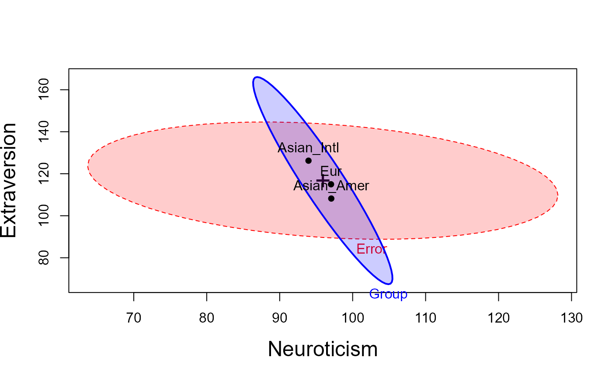
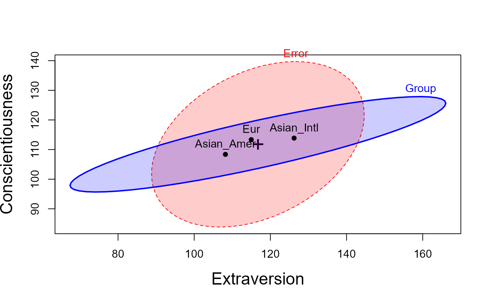
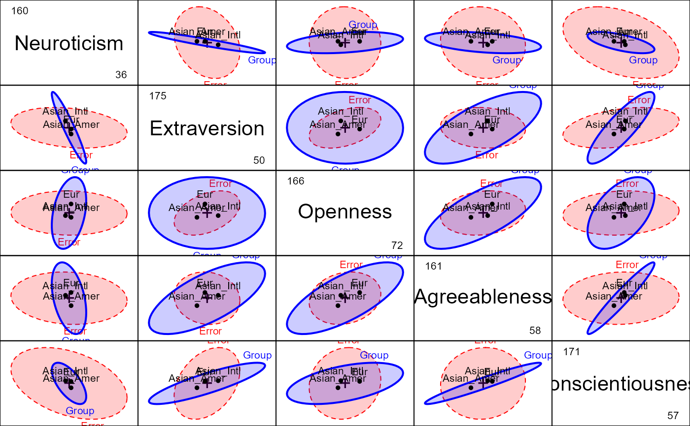
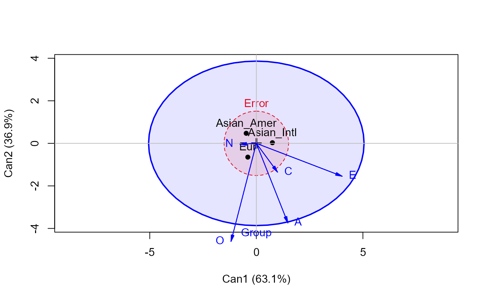

This dataset, from Grice & Iwasaki (2007), gives scores on the five personality scales of the NEO PI-r (Costa & McCrae, 1992), called the "Big Five" personality traits: Neuroticism, Extraversion, Openness-to-Experience, Agreeableness, and Conscientiousness.
Format
A data frame with 203 observations on the following 7 variables.
IDID number
Groupa factor with levels
EurAsian_AmerAsian_IntlNNeuroticism score
EExtraversion score
OOpenness score
AAgreeableness score
CConscientiousness score
Source
Grice, J., & Iwasaki, M. (2007). A truly multivariate approach to MANOVA. Applied Multivariate Research, 12, 199-226. https://doi.org/10.22329/amr.v12i3.660.
Details
The groups are:
- Eur
European Americans (Caucasians living in the United States their entire lives)
- Asian_Amer
Asian Americans (Asians living in the United States since before the age of 6 years)
- Asian_Intl
Asian Internationals (Asians who moved to the United States after their 6th birthday)
The factor Group is set up to compare E vs. Asian and the two Asian
groups
References
Costa Jr, P. T., & McCrae, R. R. (1992). Revised NEO Personality Inventory (NEO PI-R) and NEO Five-Factor Inventory (NEOFFI) professional manual. Psychological Assessment Resources.
Examples
data(Iwasaki_Big_Five)
# use Helmert contrasts for groups
contrasts(Iwasaki_Big_Five$Group) <-
matrix(c(2, -1, -1,
0, -1, 1), ncol=2)
str(Iwasaki_Big_Five)
#> tibble [203 × 7] (S3: tbl_df/tbl/data.frame)
#> $ ID : num [1:203] 1 2 3 4 5 6 7 8 9 10 ...
#> $ Group: Factor w/ 3 levels "Eur","Asian_Amer",..: 3 3 3 3 3 3 3 3 3 3 ...
#> ..- attr(*, "contrasts")= num [1:3, 1:2] 2 -1 -1 0 -1 1
#> .. ..- attr(*, "dimnames")=List of 2
#> .. .. ..$ : chr [1:3] "Eur" "Asian_Amer" "Asian_Intl"
#> .. .. ..$ : NULL
#> $ N : num [1:203] 87 101 63 104 70 63 77 123 76 59 ...
#> $ E : num [1:203] 117 134 135 118 114 131 140 122 141 133 ...
#> $ O : num [1:203] 130 123 111 108 110 108 118 115 109 104 ...
#> $ A : num [1:203] 124 115 71 107 119 125 131 99 134 130 ...
#> $ C : num [1:203] 127 124 134 111 120 138 103 107 142 126 ...
Big5.mod <- lm(cbind(N, E, O, A, C) ~ Group, data=Iwasaki_Big_Five)
coef(Big5.mod)
#> N E O A C
#> (Intercept) 96.0172751 116.4677513 117.247751 114.311746 111.8603175
#> Group1 0.5092196 -0.7428042 4.867196 2.683413 0.7394841
#> Group2 -1.5613889 9.0161111 1.019444 5.211667 2.7458333
car::Anova(Big5.mod)
#>
#> Type II MANOVA Tests: Pillai test statistic
#> Df test stat approx F num Df den Df Pr(>F)
#> Group 2 0.41862 10.43 10 394 1.106e-15 ***
#> ---
#> Signif. codes: 0 '***' 0.001 '**' 0.01 '*' 0.05 '.' 0.1 ' ' 1
# test contrasts
car::linearHypothesis(Big5.mod, "Group1", title = "Eur vs Asian")
#>
#> Sum of squares and products for the hypothesis:
#> N E O A C
#> N 94.62635 -138.0325 904.4526 498.6485 137.4155
#> E -138.03251 201.3495 -1319.3351 -727.3840 -200.4496
#> O 904.45262 -1319.3351 8644.8915 4766.1554 1313.4380
#> A 498.64846 -727.3840 4766.1554 2627.7065 724.1328
#> C 137.41555 -200.4496 1313.4380 724.1328 199.5536
#>
#> Sum of squares and products for error:
#> N E O A C
#> N 90650.37 -19544.030 -2139.170 -6905.080 -31111.087
#> E -19544.03 68087.407 25963.127 -5340.435 24283.356
#> O -2139.17 25963.127 58283.593 10117.645 6850.589
#> A -6905.08 -5340.435 10117.645 61033.794 3838.257
#> C -31111.09 24283.356 6850.589 3838.257 68134.095
#>
#> Multivariate Tests: Eur vs Asian
#> Df test stat approx F num Df den Df Pr(>F)
#> Pillai 1 0.1821649 8.731426 5 196 1.7084e-07 ***
#> Wilks 1 0.8178351 8.731426 5 196 1.7084e-07 ***
#> Hotelling-Lawley 1 0.2227405 8.731426 5 196 1.7084e-07 ***
#> Roy 1 0.2227405 8.731426 5 196 1.7084e-07 ***
#> ---
#> Signif. codes: 0 '***' 0.001 '**' 0.01 '*' 0.05 '.' 0.1 ' ' 1
car::linearHypothesis(Big5.mod, "Group2", title = "Asian: Amer vs Inter")
#>
#> Sum of squares and products for the hypothesis:
#> N E O A C
#> N 358.2272 -2068.553 -233.8897 -1195.7052 -629.9726
#> E -2068.5535 11944.691 1350.5766 6904.5011 3637.7248
#> O -233.8897 1350.577 152.7086 780.6864 411.3146
#> A -1195.7052 6904.501 780.6864 3991.0731 2102.7480
#> C -629.9726 3637.725 411.3146 2102.7480 1107.8597
#>
#> Sum of squares and products for error:
#> N E O A C
#> N 90650.37 -19544.030 -2139.170 -6905.080 -31111.087
#> E -19544.03 68087.407 25963.127 -5340.435 24283.356
#> O -2139.17 25963.127 58283.593 10117.645 6850.589
#> A -6905.08 -5340.435 10117.645 61033.794 3838.257
#> C -31111.09 24283.356 6850.589 3838.257 68134.095
#>
#> Multivariate Tests: Asian: Amer vs Inter
#> Df test stat approx F num Df den Df Pr(>F)
#> Pillai 1 0.2385785 12.28265 5 196 2.2803e-10 ***
#> Wilks 1 0.7614215 12.28265 5 196 2.2803e-10 ***
#> Hotelling-Lawley 1 0.3133330 12.28265 5 196 2.2803e-10 ***
#> Roy 1 0.3133330 12.28265 5 196 2.2803e-10 ***
#> ---
#> Signif. codes: 0 '***' 0.001 '**' 0.01 '*' 0.05 '.' 0.1 ' ' 1
# heplots
labs <- c("Neuroticism", "Extraversion", "Openness", "Agreeableness", "Conscientiousness" )
heplot(Big5.mod,
fill = TRUE, fill.alpha = 0.2,
cex.lab = 1.5,
xlab = labs[1], ylab = labs[2])

heplot(Big5.mod, variables = c(2,5),
fill = TRUE, fill.alpha = 0.2,
cex.lab = 1.5,
xlab = labs[2], ylab = labs[5])

pairs(Big5.mod,
fill = TRUE, fill.alpha = 0.2, var.labels = labs)

# canonical discriminant analysis
if (require(candisc)) {
library(candisc)
Big5.can <- candisc(Big5.mod)
Big5.can
heplot(Big5.can, fill = TRUE, fill.alpha = 0.1)
}

#> Vector scale factor set to 5.482892